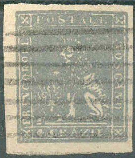
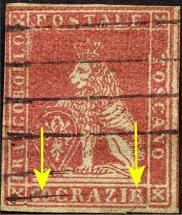
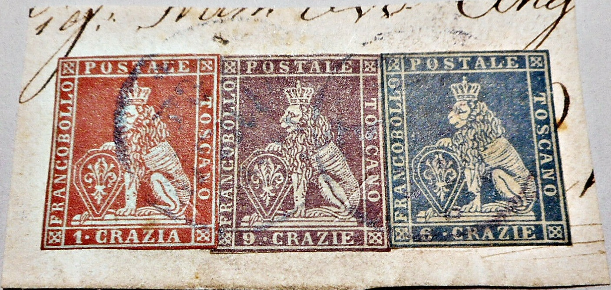

(Another forgery, note the small '2' in the 2 c values)
Toscana - Toscane - Toskana
Return To Catalogue - Tuscany 1851 issue, forgeries, part 1 - Tuscany 1851 issue, forgeries, part 3 - Tuscany 1851 issue, forgeries, part 4 - Tuscany Fournier forgeries - Tuscany 1851 issue, more Fournier forgeries - Tuscany 1851, Oneglia(?) forgeries - Tuscany 1851 issue - Tuscany 1860 issue and miscellaneous - Italy
Note: on my website many of the
pictures can not be seen! They are of course present in the
catalogue;
contact me if you want to purchase the catalogue.
Album Weeds gives already 13 (!) forgeries for this issue. The genuine stamps have watermarks (though some forgeries have also a watermark) and were printed on rough handmade paper. Some of these forgeries are very deceptive. The genuine stamps have a small cross on top of the crown. However, this is often hardly visible and will become a spike. The cross should be under the left hand side of the vertical stroke of the "T" of "POSTALE". If the cross is clearly visible, then the stamp is 'suspect'.

(Another forgery, note the small '2' in the 2 c values)
The design of the above forgeries is very blur and the colour differ considerably from the genuine stamps. I have also seen the 2 c value with the 'parallel lines' cancel as shown in the 4 c value. Note the 'hole' in the nose.

I possess the values 1 q, 1 s, 1 c, 2 c, 6 c and 9 c of this particular forgery. The 2 s, 4 c and 60 c also exist (see images above). In all those values a white dot can be found between the crown and the 'A' of 'POSTALE'. Also, the line below the value inscription is continuous. They are printed with very large margins in between the stamps (about 1/2 the size of the stamp). More of these forgeries for other Italian States can be found by clicking here. I'm not 100 % sure, but the next forgeries of the 60 c value might have been made by the same forger:


Forgeries with "60 CRAZIE" too wide (these could also
belong to the same forgery 'set' perhaps?). Are these the same
forgeries as those shown in the Fifteenth Forgery set?


This 9 c stamp has the wrong value inscription "9 CRAZIA" instead of "9 CRAZIE"! Also the "9" has a very weird shape. This might be the same forgery type as Fifth Forgery Type.

The above stamp is actually a 1 Cr stamp (one of the cheaper stamps in this series), the "1" and "A" of "1. CRAZIA" have been skillfully removed and replaced with "60" and "E" to make a 60 Cr stamp! (image obtained thanks to Lorenzo)

The crown on this 2 s forgery is very large and bright
These forgeries all have the bottom frameline continuous (no holes as in the genuine) and the crown very clear. On some values the value is placed too far to the right. I think they were all made by the same forger. Sometimes, they are offered as 'rare reprints' on Internet auctions. I've mostly seen them uncancelled. In the 4 c value, the "4" is closed at the top (genuine stamps have an open "4"). In the several copies I've seen of the 6 c, part of the front leg is missing. I have also seen the 4 c forgery with a cancel consisting of a few blotches.
These forgeries also appear on labels for the VIII Congresso
Filatelico Italiano in Firenze of 1921 (or were the above
forgeries cut from these labels?).

Another label of a philatelic exhibition in 'Firenze - 1 Aprile
1951' with images of these forgeries. .

Two of these forgeries, pasted on part of a letter, in the 1 s,
the second "O" of "SOLDO" is too far to the
left. In the 6 c, part of the front leg is missing.

Another piece of a letter with these forgeries.

The "9" is different in this pair of 9 crazie forgeries
pasted on a piece of a letter.
Two rows of forgeries, apparently made by the same forger:


A very badly done forgery of the 2 s value. All the lettering is very bad. Due to the heavy cancel consisting of horizontal lines, I can't really see the lion. Also a forgery of the 1 s value made by the same forger; here the lion is also barely visible.


In this forgery, the tail of the lion does not go low enough. The dots on the shield are mostly missing. A similar forgery of the 2 soldi can be found at the site: http://forgeriesofitalianstates.com/Tuscany/Tuscany.htm (with identical cancel). Also note the shape of the letters.

Probably the same forgeries on a piece of paper. The
"1" in the 1 quattr stamp is placed too far to the
right. The face of the lion is different from a genuine stamp.
Tuscany 1851 issue,
forgeries, part 1
Tuscany 1851 issue, forgeries, part 3
Tuscany 1851 issue, forgeries, part 4
Tuscany 1851 issue, forgeries, Fournier
forgeries
Tuscany 1851 issue, forgeries, more
Fournier forgeries
Tuscany 1851, Oneglia(?) forgeries


{kind=link}
{kind=link}
{kind=link}
{kind=link}
{kind=link}
{kind=link}